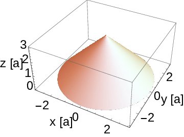

Beräkna normalytintegralen av $$ \begin{equation} \vec{F}= F_0 \frac{a^2}{(x^2+y^2+z^2)^{3/2}} \left[ x \hat{x} + y \hat{y} + \left( z + \frac{z}{a} \frac{(x^2+y^2+z^2)^{3/2}}{a^2} \right) \hat{z} \right ] \tag{1} \end{equation} $$ över ytan \( S_1:\ x^2+y^2=(z-3a)^2 \), \( 0\leq z\leq 3a \). \( F_0 \) och \( a \) är konstanter.
Hint.
Answer. \( \int_{S_1} \vec{F} \cdot \mbox{d}\vec{S} = 11 \pi F_0 a^2 \)
Solution. Det vi ska räkna ut är normalytintegralen över \( S_1 \), dvs $$ \begin{equation} \int_{S_1}\ d\vec{S}\cdot \vec{F} \tag{2} \end{equation} $$ Detta kan så klart lösas genom att hitta en normalvektor till ytan, sedan hitta en parametrisering till konen och utföra den resulterande integralen. Man ska dock ha i ryggraden att man kan använda Gauss sats istället, det finns ingen garanti att det blir enklare men det är ofta värt att tänka på det.
Vi använder oss därför av den generella lösningsstrategin för Gauss sats:
Figure 1: Ytan \( S_1 \) uppritad.

Fältet \( \vec{F}_2 \) motsvarar en rymdkälla med konstant källtäthet $$ \begin{equation} \nabla \cdot \vec{F_2} = F_0 \partial_z \frac{z}{a} = \frac{F_0}{a}. \tag{8} \end{equation} $$
Bottenplattan motsvarar alltså cirkeln som konen ligger på i \( x,y \) planet. Vi kallar denna ytan \( S_2 \) och skriver den som \( S_2:\ x^2+y^2\leq (3a)^2 \).
Vi har dock ett litet problem nu: Punktkällan ligger mitt i bottenplattan, dvs på ytan. Hur ska man tänka nu? Vi kommer att illustrera tre olika sätt att hantera denna punktkälla.
För att följa alt. 1 inför vi en halvsfär upp i det övre halvplanet med centrum i origo. Halvsfärens radie kallar vi \( \epsilon \) och låter denna vara liten så att halvsfärens yta inte skär konens mantelyta. Denna nya yta kallar vi \( S^+_\epsilon \). Tillsammans med \( S_1 \) och den modifierade bottenplattan \( S_{2-\epsilon} \) bildas en sluten yta som inte kommer att innesluta punktkällan i volymen.
För att följa alt. 2 så sluter vi t.ex. ytan med en halvsfär ned i det nedre halvplanet med centrum i origo. Här kan vi låta radien vara lika med \( 3a \) så att vi direkt får en sluten yta av \( S_1 + S^-_{3a} \) som omsluter punktkällan, där \( S^-_{3a} \) är den införda halvsfärens yta.
För att följa alt. 3 handlar det bara om att beräkna hur stor rymdvinkel som konen upptar sedd från punktkällan. Se mer nedan.
Vi använder den slutna ytan \( S_1+S_2 \) som vi kan använda i Gauss sats $$ \begin{equation} \int_{S_1+S_2} \vec{F}_2 \cdot d\vec{S} = \int_V \nabla \cdot \vec{F}_2 dV \tag{11} \end{equation} $$
Vi bollar över integralen över \( S_2 \) till andra sidan av likheten och får $$ \begin{equation} \tag{12} \int_{S_1} \vec{F}_2 \cdot d\vec{S} = \int_V \nabla \cdot \vec{F}_2 dV - \int_{S_2} \vec{F}_2 \cdot d\vec{S} \end{equation} $$ där den ytintgral som uppgiften ber oss beräkna nu står i vänsterledet. Vi ser att det var viktigt att sluta ytan då vi nu har en extra term att dra bort från värdet av volymsintegralen. Nyttan med Gauss sats är som störst när divergensen är simpel och normalytintegralen över bottenplattan (eller vilken annan del man slutit sin yta med) är simpel.
Divergensen för \( \vec{F}_2 \) räknade vi ut ovan och vi får $$ \begin{equation} \int_V \nabla \cdot \vec{F_2} dV = \frac{F_0}{a} \int_V dV = F_0 \pi (3a)^2 \tag{13} \end{equation} $$ där vi i det sista steget använt att volymen av en kon är \( V=\pi r^2 h/3 \) där \( r \) är basradien och \( h \) är höjden.
Vi behöver nu ytintegralen över bottenlattan kvar enligt ekv. (12). Det är viktigt att notera att bottenplattans normalvektor pekar ut från den inneslutna volymen, dvs nedåt. Vi ska alltså beräkna $$ \begin{equation} \int_{S_2} \vec{F_2} \cdot d\vec{S} = -\int_{S_2} \vec{F_2} \cdot \hat{z} dS= -\int_{S_2} F_0\frac{z}{a}\hat{z} \cdot \hat{z} dS \tag{14} \end{equation} $$ eftersom \( z=0 \) på \( S_2 \) så integralen över \( \vec{F}_2 \) på bottenplattan är noll. Vi har alltså att $$ \begin{equation} I_2 = F_0 \pi (3a)^2 \tag{15} \end{equation} $$
Återstår integralen över \( \vec{F}_1 \). Enligt alt. 1 blir $$ \begin{equation} \tag{16} I_1 = \int_{S_1} \vec{F}_1 \cdot d\vec{S} = \int_{V_1} \nabla \cdot \vec{F}_1 dV - \int_{S_{2-\epsilon}} \vec{F}_1 \cdot d\vec{S} - \int_{S^+_{\epsilon}} \vec{F}_1 \cdot d\vec{S}. \end{equation} $$ Volymsintegralen görs här över en volym som inte inkluderar punktkällan. Den blir därför noll (divergensen \( \nabla \cdot \vec{F}_1=0 \) i hela denna volym). Ytintegralen över bottenplattan \( S_{2-\epsilon} \) blir också noll eftersom fältets riktning \( \hat{r} \) är vinkelrät mot ytans normalriktning. På denna yta ligger ju \( \hat{r} \) alltid i \( xy \) planet. Slutligen har vi integralen över halvsfären. Normalen måste här vara riktad i negativ \( \hat{r} \)-led för att peka ut från volymen $$ \begin{equation} \int_{S^+_{\epsilon}} \vec{F_1} \cdot d\vec{S} = \int_{S^+_{\epsilon}} F_0 a^2 \frac{\hat{r}}{\epsilon^2} \cdot (-\hat{r}) \epsilon^2 \sin\theta \mbox{d}\theta \mbox{d}\phi= -F_0 a^2 2\pi \tag{17} \end{equation} $$ Slutligen får vi alltså \( I_1 = 0 - 0 - (-F_0 a^2 2\pi ) = F_0 a^2 2\pi \).
Med alt. 2 har vi att $$ \begin{equation} \tag{18} I_1 = \int_{S_1} \vec{F}_1 \cdot d\vec{S} = \int_{V_2} \nabla \cdot \vec{F}_1 dV - \int_{S^-_{3a}} \vec{F}_1 \cdot d\vec{S}. \end{equation} $$ Nu kommer volymen \( V_2 \) att innesluta punktkällan och bidraget från denna term blir lika med punktkällans styrka: \( F_0 a^2 4\pi \). Ytintegralen över \( S^-_{3a} \) göra på precis samma sätt som ovan, men vi skall nu notera att normalriktningen pekar i positiv \( \hat{r} \)-led för att peka ut från volymen. Bidraget blir \( F_0 a^2 2\pi \). Slutligen ger alltså denna metod att \( I_1 = F_0 a^2 4\pi - F_0 a^2 2\pi = F_0 a^2 2\pi \), precis som alt. 1 ovan.
Enligt alt. 3 hade vi direkt kunnat räkna ut ytintegralen över konens mantelyta med Cederwall ekv. 6.7. Sett från punktkällan i origo upptar konens mantelyta en rymdvinkel \( 2\pi \). Det totala bidraget blir därför \( (2\pi)/(4\pi) = 1/2 \) av punktkällans styrka. Dvs vi får \( I_1 = (F_0 a^2 4\pi)/2 = F_0 a^2 2\pi \). Givetvis samma resultat som med alt. 1 och 2.
Nu kombinerar vi ihop våra delresultat $$ \begin{equation} \int_{S_1} \vec{F} \cdot d\vec{S} = I_1 + I_2 = F_0 a^2 2\pi + F_0 \pi (3a)^2 = F_0 \pi 11 a^2 \tag{19} \end{equation} $$
Svaret på uppgiften är alltså \( 11\pi F_0 a^2 \).
Kontrollera också dimensionen på svaret. Vårt fält har dimensionen \( [F_0] \) och ytintegralen skall därför ha dimensionen $[F_0]$*area, vilket verkar stämma.
Uppgiften illustrerar olika sätt att hantera en singularitet som hamnar på randen till en volym.
Det är värt att notera att den här uppgiften innehåller ett icke-standard moment som utgörs av att punktkällan ligger på den bottenyta som är naturlig att sluta ytan med.
Notera att vi i slutändan fick precis halva styrkan av punktkällan som bidrag oavsett vilken metod vi använde för att hantera den. Det betyder att det kanske enklaste sättet att se detta på är att punktkällan strålar halva sitt bidrag in mot konen \( S_1 \) i detta fallet, dvs man tänker som i metod 3.